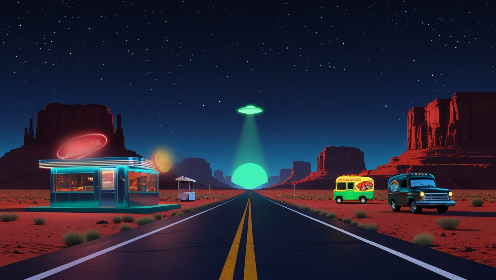
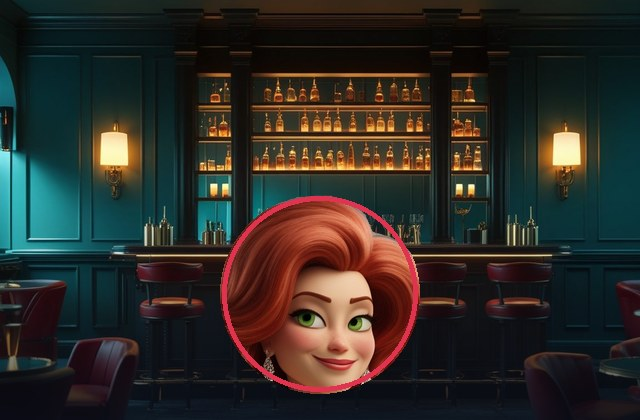
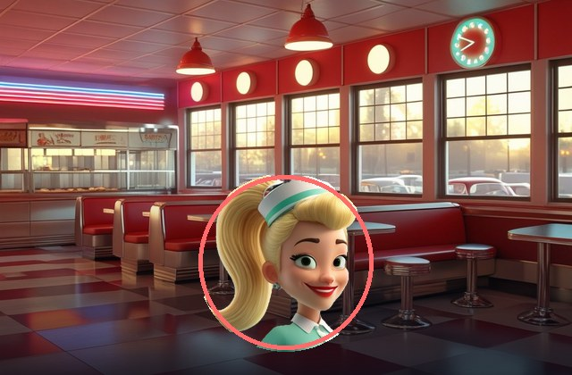
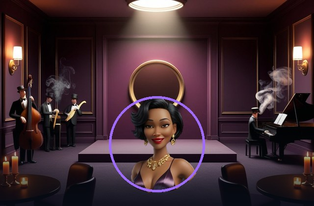
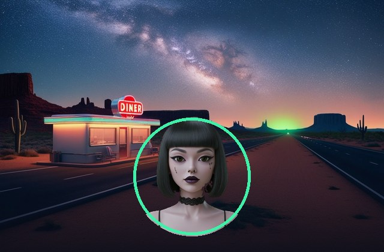
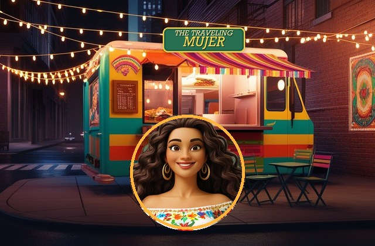
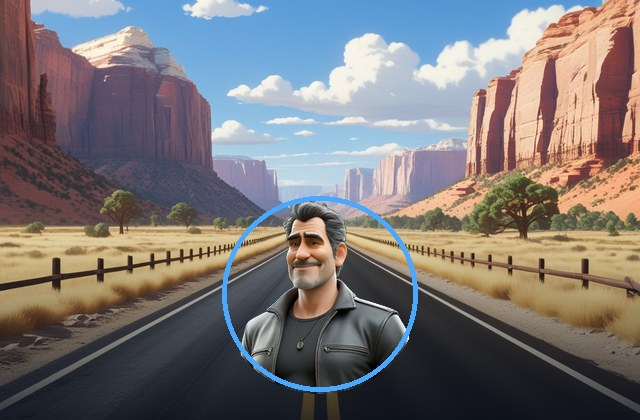
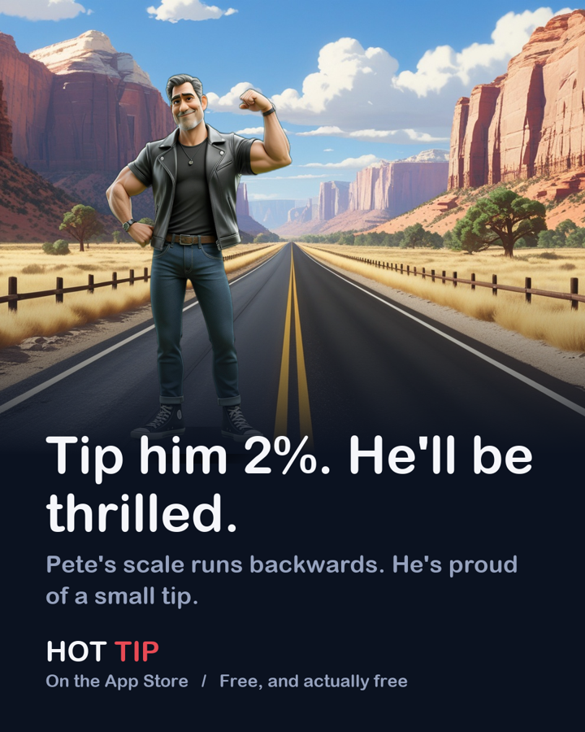
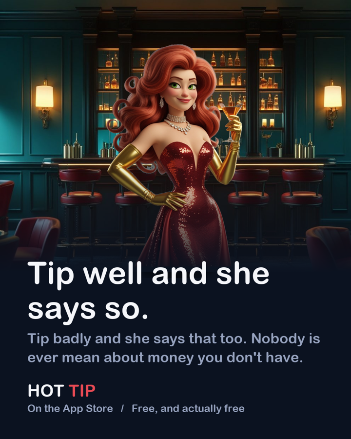

HOT TIP
Open late · iPhone · Free
One man has met all of them. Not one of their stories agrees.
Six rooms strung along one road, and somebody working in each of them. You came to settle a check — that part takes three seconds. The rest is why people keep opening it.
Twenty-one seconds. The sound is off on purpose.
Six rooms. Six people with views.
Pick one and somebody is working in it. Tip well and they say so. Tip badly and they say that too. Nobody is ever mean to you about money you don’t have.

The Lounge
The Diner
The Blue Note
The Abduction
The Traveling Mujer
The Open Road
There is a seventh door. Nobody is behind it — just the calculator, every rate at once, and what each person owes. It is called Straight Up, and it is there for the days you are not in the mood for any of them.
What it’s actually for.
Under the jokes it is a real ledger, and everything in it is yours to take back out.
- A weekend runLog every stop — the place, what it cost, a photo of it, a photo of the plate, a rating out of five. Tally adds the run up: spent, days, per day, per stop. Comes out as an instant print with the town, the county and the coordinates across the bottom.
- A night outPut the check on somebody’s tab and the app keeps a running one. Split it three ways by what each person actually ate, and send everyone a real receipt in Messages. Photograph the plate and that night has a picture you would actually post.
- Your data, backExport the whole ledger — every run, stop, person, expense and photo — as one package: a JSON file and a folder of pictures, into a folder you own. Open it in a spreadsheet, put it on a map, or move it to a new phone. It never passes through anyone.
Two of them are always leaving.
A man on a Harley who has been everywhere and remembers all of it, mostly as it relates to him. A truck that is wherever it decided to be that week. He has been in every one of these rooms. She turns up in places she has no business being. Stories travel the way travellers do — arriving before the people in them, picking something up at every stop.
- Four times now, across four different years, he has let a bartender know he’ll be back through in the spring. He considers each one a favour to her.
- Somebody came a very long way for a specimen and went home without one. Whatever happened instead, two of them agreed never to write it down.
- One slice of pie. Eleven coffee refills. A Tuesday, some years ago. She still has the page.
- Two of them tell the same story about the same night. Neither version has the other one in it.
- There is a second motorcycle on that road, and it is the wrong make. Nobody in here will say whose it is.
- There is a roadrunner. Everyone has an opinion about the roadrunner.
You will not be told any of it. Some of it only surfaces when it rains. Some of it only if you leave them alone for a while.
It knows what it’s like outside.
Leave the weather on and the sky in the room is the sky over your head. The highway goes gold at sunset and dark after it. The windows of the diner go with the hour. Somebody mentions the forecast, usually unhelpfully.
On Straight Up it stops being scenery. Somebody is out working in that rain, and tipping a little more for it is a real courtesy with a real number attached — so the receipt prints the number, once, and never asks twice. Weather by Apple Weather.
What it will never do.
- No ads. Not one, not ever, not “just a small banner at the bottom.”
- No tracking. Nothing about you is collected. There is no server to send it to.
- No subscription. No pro tier, no trial, no feature dangled out of reach.
- No tricks. No fake urgency, no buried buttons, no guilt on the way out.
I know it’s none of my business what you spent or who you were with. You have enough people trying to trick you out of your hard-earned money. I’d rather not be one of them. — Ryan, who made it
There’s a tip jar at the bottom of Settings. It unlocks nothing, because there’s nothing left to unlock. The app never asks.
A look at it.

